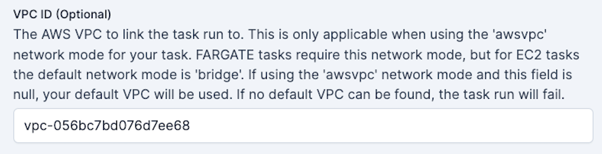

ECS Worker Guide
Why use ECS for flow run execution?
ECS (Elastic Container Service) tasks are a good option for executing Prefect 2 flow runs for several reasons:
- Scalability: ECS scales your infrastructure in response to demand, effectively managing Prefect flow runs. ECS automatically administers container distribution across multiple instances based on demand.
- Flexibility: ECS lets you choose between AWS Fargate and Amazon EC2 for container operation. Fargate abstracts the underlying infrastructure, while EC2 has faster job start times and offers additional control over instance management and configuration.
- AWS Integration: Easily connect with other AWS services, such as AWS IAM and CloudWatch.
- Containerization: ECS supports Docker containers and offers managed execution. Containerization encourages reproducible deployments.
ECS Flow Run Execution
To set up Prefect flow execution in your cloud infrastructure, you need to understand two key Prefect concepts:
- a worker to poll Prefect's API (specifically that worker's work queue)
- and the emphemeral infrastructure that this worker will spin up for each scheduled flow run.
Architecture Diagram
graph TB
subgraph ecs_cluster[ECS cluster]
subgraph ecs_service[ECS service]
td_worker[Worker task definition] --> |defines| prefect_worker((Prefect worker))
end
prefect_worker -->|kicks off| ecs_task
fr_task_definition[Flow run task definition]
subgraph ecs_task["ECS task execution <br> (Flow run infrastructure)"]
style ecs_task text-align:center
flow_run((Flow run))
end
fr_task_definition -->|defines| ecs_task
end
subgraph prefect_cloud[Prefect Cloud]
subgraph prefect_workpool[ECS work pool]
workqueue[Work queue]
end
end
subgraph github["GitHub"]
flow_code{{"Flow code"}}
end
flow_code --> |pulls| ecs_task
prefect_worker -->|polls| workqueue
prefect_workpool -->|configures| fr_task_definitionECS in Prefect Terms
ECS tasks != Prefect tasks
An ECS task is not the same thing as a Prefect task.
ECS tasks are groupings of containers that run within an ECS Cluster. An ECS task's behavior is determined by its task definition.
An ECS task definition is the blueprint for the ECS task. It describes which Docker containers to run and what you want to have happen inside these containers.
ECS tasks are instances of a task definition. A Task Execution launches container(s) as defined in the task definition until they are stopped or exit on their own. This setup is ideal for ephemeral processes such as a Prefect flow run.
The ECS task running the Prefect worker should be an ECS Service, given its long-running nature and need for auto-recovery in case of failure. An ECS service automatically replaces any task that fails, which is ideal for managing a long-running process such as a Prefect worker.
When a Prefect flow is scheduled to run it goes into the work pool specified in the flow's deployment. Work pools are typed according to the infrastructure the flow will run on. Flow runs scheduled in an ecs typed work pool are executed as ECS tasks. Only Prefect ECS workers can poll an ecs typed work pool.
When the ECS worker receives a scheduled flow run from the ECS work pool it is polling, it spins up the specified infrastructure on AWS ECS. The worker knows to build an ECS task definition for each flow run based on the configuration specified in the work pool.
Once the flow run completes, the ECS containers of the cluster are spun down to a single container that continues to run the Prefect worker. This worker continues polling for work from the Prefect work pool.
If you specify a task definition ARN (Amazon Resource Name) in the work pool, the worker will use that ARN when spinning up the ECS Task, rather than creating a task definition from the fields supplied in the work pool configuration.
You can use either EC2 or Fargate as the capacity provider. Fargate simplifies initiation, but lengthens infrastructure setup time for each flow run. Using EC2 for the ECS cluster can reduce setup time. In this example, we will show how to use Fargate.
AWS CLI Guide
Tip
If you prefer infrastructure as code check out this Terraform module to provision an ECS cluster with a worker.
Prerequisites
Before you begin, make sure you have:
- An AWS account with permissions to create ECS services and IAM roles.
- The AWS CLI installed on your local machine. You can download it from the AWS website.
- An ECS Cluster to host both the worker and the flow runs it submits.
- A VPC configured for your ECS tasks. A VPC is a good idea if using EC2 and required if using Fargate.
Step 1: Set Up an ECS work pool
Before setting up the worker, create a simple work pool of type ECS for the worker to pull work from.
Create a work pool from the Prefect UI or CLI:
prefect work-pool create --type ecs my-ecs-pool
Configure the VPC and ECS cluster for your work pool via the UI: 
Configuring custom fields is easiest from the UI.

Warning
You need to have a VPC specified for your work pool if you are using AWS Fargate.
 Pictures of UI Cropped
Pictures of UI Cropped
Next, set up an Prefect ECS worker that will discover and pull work from this work pool.
Step 2: Start a Prefect worker in your ECS cluster.
To create an IAM role for the ECS task using the AWS CLI, follow these steps:
-
Create a trust policy
The trust policy will specify that ECS can assume the role.
Save this policy to a file, such as
ecs-trust-policy.json:{ "Version": "2012-10-17", "Statement": [ { "Effect": "Allow", "Principal": { "Service": "ecs-tasks.amazonaws.com" }, "Action": "sts:AssumeRole" } ] } -
Create the IAM role
Use the
aws iam create-rolecommand to create the role:aws iam create-role \ --role-name ecsTaskExecutionRole \ --assume-role-policy-document file://ecs-trust-policy.json -
Attach the policy to the role
Amazon has a managed policy named
AmazonECSTaskExecutionRolePolicythat grants the permissions necessary for ECS tasks. Attach this policy to your role:aws iam attach-role-policy \ --role-name ecsTaskExecutionRole \ --policy-arn arn:aws:iam::aws:policy/service-role/AmazonECSTaskExecutionRolePolicyRemember to replace the
--role-nameand--policy-arnwith the actual role name and policy Amazon Resource Name (ARN) you want to use.Now, you have a role named
ecsTaskExecutionRolethat you can assign to your ECS tasks. This role has the necessary permissions to pull container images and publish logs to CloudWatch. -
Create a task definition
Next, create an ECS task definition that specifies the Docker image for the Prefect worker, the resources it requires, and the command it should run. In this example, the command to start the worker is prefect worker start --pool my-ecs-pool.
Here are the steps:
- Create a JSON file with the following contents:
{
"family": "prefect-worker-task",
"networkMode": "awsvpc",
"taskRoleArn": "<your-ecs-task-role-arn>",
"executionRoleArn": "<your-ecs-task-role-arn>",
"containerDefinitions": [
{
"name": "prefect-worker",
"image": "prefecthq/prefect:2-latest",
"cpu": 512,
"memory": 1024,
"essential": true,
"command": [
"pip",
"install",
"prefect-aws",
"&&",
"prefect",
"worker",
"start",
"--pool",
"my-ecs-pool"
],
"environment": [
{
"name": "PREFECT_API_URL",
"value": "https://api.prefect.cloud/api/accounts/<your-account-id>/workspaces/<your-workspace-id>"
},
{
"name": "PREFECT_API_KEY",
"value": "<your-api-key>"
}
]
}
]
}
-
Use
prefect config viewto view thePREFECT_API_URLfor your current Prefect profile. -
For the
PREFECT_API_KEY, individuals on the organization tier can create a service account for the worker. If on a personal tier, you can pass a user’s API key. -
Replace
<your-ecs-task-role-arn>with the ARN of the IAM role you created in Step 1, and<your-ecr-image>with the URI of the Docker image you pushed to Amazon ECR. -
Notice that the CPU and Memory allocations are relatively small. The worker's main responsibility is to submit work, not to execute your Prefect flow code.
Tip
To avoid hardcoding your API key into the task definition JSON see how to add environment variables to the container definition.
Step 3: Create an ECS service to host your worker
Finally, create a service that will manage your Prefect worker:
Open a terminal window and run the following command to create an ECS Fargate service:
aws ecs create-service \
--service-name prefect-worker-service \
--cluster <your-ecs-cluster> \
--task-definition file://<path-to-task-definition-file>.json \
--launch-type FARGATE \
--desired-count 1 \
--network-configuration "awsvpcConfiguration={subnets=[<your-subnet-ids>],securityGroups=[<your-security-group-ids>]}"
Replace <your-ecs-cluster> with the name of your ECS cluster, <path-to-task-definition-file> with the path to the JSON file you created in Step 2, <your-subnet-ids> with a comma-separated list of your VPC subnet IDs, and <your-security-group-ids> with a comma-separated list of your VPC security group IDs.
Sanity check
The work pool page in the Prefect UI allows you to check the health of your workers - make sure your new worker is live!
Step 4: Pick up a flow run with your new worker!
-
Write a simple test flow in a repo of your choice:
my_flow.pyfrom prefect import flow, get_run_logger @flow def my_flow(): logger = get_run_logger() logger.info("Hello from ECS!!") if __name__ == "__main__": my_flow() -
Configure a project pull step to allow the worker to access your flow code at runtime.
Create a Prefect Project.
Run the following command at the base of whichever repo contains your flow. (See our Projects Tutorial for other recipes with other pull step options.)
prefect project init --recipe gitIn the
prefect.yamlfile, specify the code in the pull step to allow the worker to access your flow code.prefect.yaml# File for configuring project / deployment build, push and pull steps # Generic metadata about this project name: my-repo-name prefect-version: 2.10.12 # build section allows you to manage and build docker images build: null # push section allows you to manage if and how this project is uploaded to remote locations push: null # pull section allows you to provide instructions for cloning this project in remote locations pull: - prefect.projects.steps.git_clone_project: repository: https://github.com/git-user/my-repo-name.git branch: main access_token: null -
Deploy the flow to the server, specifying the ECS work pool
prefect deploy my_flow.py:my_flow --name ecs-test-deployment --pool my-ecs-pool -
Find the deployment in the UI and click the Quick Run button!
Optional Next Steps
-
Now that you are confident your ECS worker is healthy, you can experiment with different work pool configurations.
- Do your flow runs require higher
CPU? - Would an EC2
Launch Typespeed up your flow run execution?
These infrastructure configuration values can be set on your ECS work pool or they can be overriden on the deployment level if desired.
- Do your flow runs require higher
-
Create a custom image for your flow executions, which you can build and push to the Amazon ECR registry.
For example, a minimal base Dockerfile for a flow run in ECS could look like:
FROM prefecthq/prefect:2-python3.10 RUN pip install s3fs prefect-aws -
Consider adding a build step to your Prefect Project
prefect.yamlif you want to automatically build a Docker image and push it to the repository referenced by the image name each timeprefect deployis run.build: - prefect_docker.projects.steps.build_docker_image: requires: prefect-docker>=0.2.0 image_name: my-repo/my-image tag: my-tag dockerfile: auto push: true